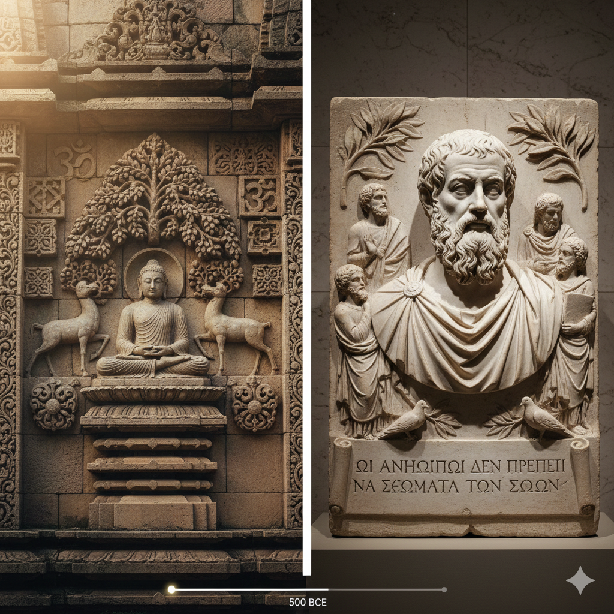
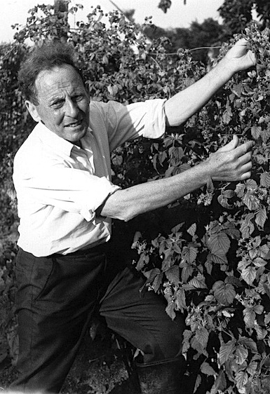

"A Terra foi criada para todos nós,
não para alguns de nós."
Veganos primitivos
A história do veganismo é uma narrative milenar que evoluiu de uma prática espiritual profunda para um movimento político e ambiental global. Embora a palavra "vegan" só tenha surgido em 1944, a essência de evitar a exploração animal remonta à Antiguidade, especialmente na Índia e na Grécia. Civilizações orientais fundamentadas no Hinduísmo, Jainismo e Budismo já praticavam o conceito de Ahimsa, que prega a não violência contra todos os seres vivos, influenciando gerações de ascetas e filósofos. No Ocidente, figuras como Pitágoras defendiam o respeito aos animais por acreditarem que todas as formas de vida compartilhavam uma alma comum, criando uma linhagem de pensamento que sobreviveu discretamente através dos séculos.

O surgimento do veganismo moderno
A grande virada ocorreu em meados do século XX, na Inglaterra, sob a liderança de Donald Watson. Professor e marceneiro de convicção ética profunda, Watson teve um despertar ainda na infância ao testemunhar o abate de um porco na fazenda de seu tio, o que o levou a questionar a origem de sua comida. Em 1944, ele e um pequeno grupo de dissidentes da Sociedade Vegetariana Britânica decidiram que era necessário criar uma distinção clara para aqueles que, além da carne, também não consumiam ovos, leite e derivados, produtos que Watson considerava provenientes de uma exploração tão cruel quanto a do abate. Ele cunhou o termo "vegan" utilizando as primeiras três e as duas últimas letras da palavra vegetarian, simbolizando que o veganismo era o início e a conclusão lógica do vegetarianismo. Ao fundar a The Vegan Society, Watson não apenas deu nome ao movimento, mas estabeleceu as bases de uma filosofia que busca excluir, na medida do possível e praticável, todas as formas de exploração animal, vivendo ele próprio de acordo com esses princípios até os 95 anos de idade.

A partir dos anos 70, o movimento ganhou uma nova camada intelectual com a publicação de "Libertação Animal", de Peter Singer, que trouxe o debate sobre o especismo para dentro das universidades e da ética moderna. Com o passar das décadas, o foco se expandiu: o que antes era motivado quase exclusivamente pela compaixão individual, passou a ser visto como uma ferramenta crucial contra a crise climática e o desmatamento. Hoje, o veganismo atravessa a cultura pop, a alta tecnologia alimentícia e as políticas de sustentabilidade, deixando de ser um hábito de nicho para se consolidar como uma resposta coletiva aos desafios éticos e ambientais do século XXI.
Galeria de Fotos